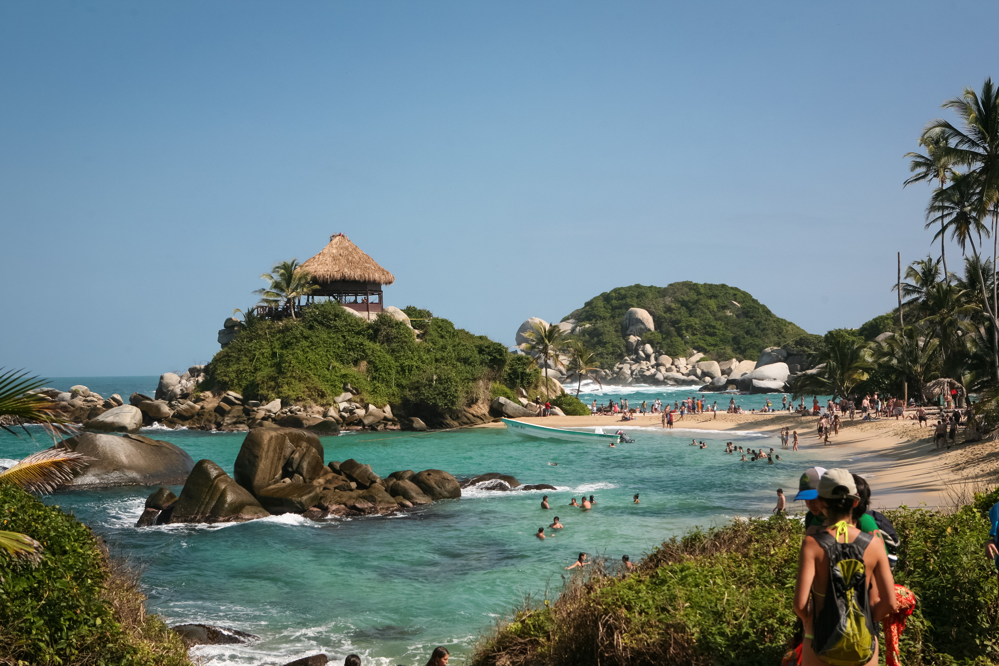
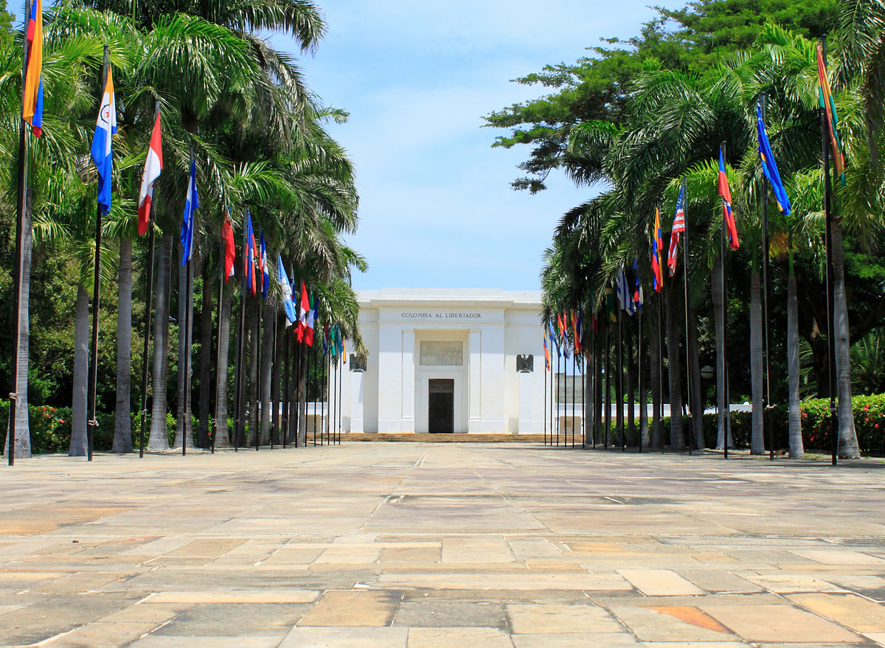
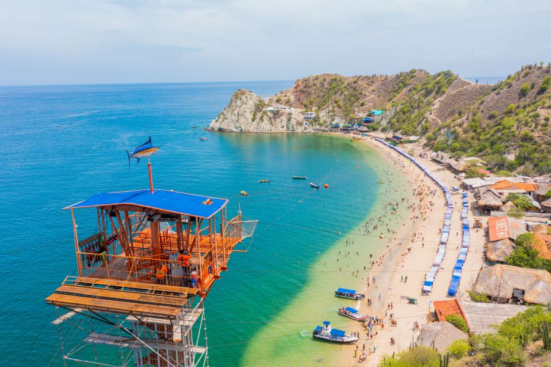
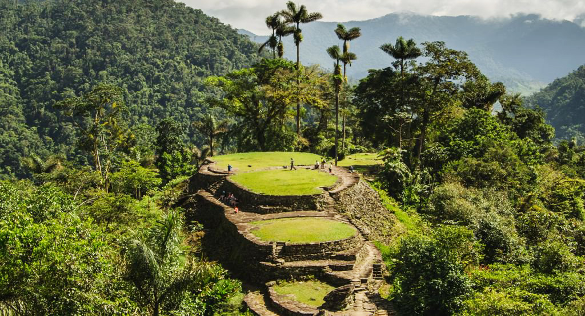

Parque Nacional Natural Tayrona
Este parque es uno de los destinos más emblemáticos de Colombia, conocido por su biodiversidad y paisajes asombrosos.

Quinta de San Pedro Alejandrino
La Quinta de San Pedro Alejandrino es una histórica hacienda en Santa Marta, famosa por ser el lugar donde murió Simón Bolívar.

Playa Blanca
Playa Blanca es una de las playas más hermosas de la región, famosa por sus aguas cristalinas y arenas blancas.

Ciudad Perdida
Ciudad Perdida es un sitio arqueológico en la Sierra Nevada de Santa Marta, conocido como el hogar ancestral de los indígenas Tayrona.